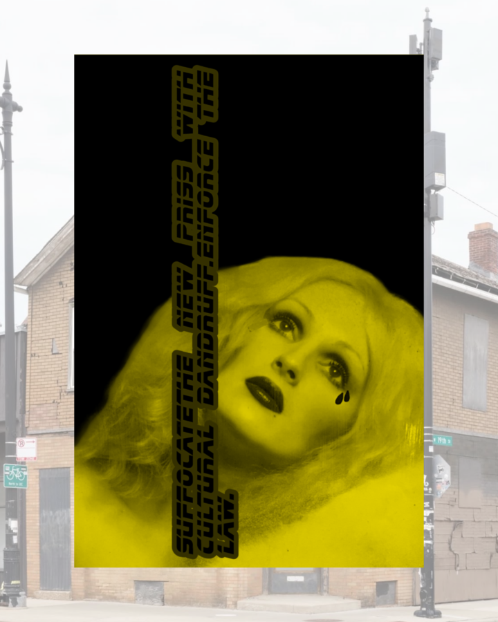

Mark Verabioff – WARM LEATHERETTE
Hans Goodrich is pleased to present WARM LEATHERETTE, a solo exhibition by Los Angeles-based visual cultural insurgent Mark Verabioff, opening this Thursday, May 21 from 6 – 8 pm
Working across language, installation, and exhibition design, Verabioff treats the gallery not as a neutral container, but as a pressure system—an arena where text becomes image, display becomes behavioral control, and participatory spectacle itself is placed under siege.
For WARM LEATHERETTE, Verabioff intervenes directly onto the gallery’s storefront windows, carpet bombing them with vinyl image/ text decals in a sustained and confrontational criminal gay gesture. These works operate as linguistic disruptions—simultaneously seductive and hostile—targeting what Verabioff has coined as “the new bore”: a pandemic of digital pestilence infecting culture’s immune system. As passersby encounter the installation, their gaze is not passive but processed, folded into a feedback loop of criminal gay combustion and reflection. The storefront becomes both barrier trench and broadcast tower, a public-facing behavioral script where language is weaponized and participation is implicated in plain sight.
WARM LEATHERETTE will be on view in conjunction with Chicago’s 48th annual International Mr. Leather convention, and is visible from the street 24/7 throughout the duration of the exhibition.
VIDEO AS WEAPON: CONTROL, COLLAPSE, REPEAT
On the evening of Saturday, May 23, Hans Goodrich will host an artist talk by Mark Verabioff and a screening, featuring two new music videos made by Verabioff with Danish producer Jeppe Laursen.
First connected in Echo Park in the mid-2000s, their recent collaboration here is a confrontational audiovisual system—where the music video is redeployed as a weapon rather than entertainment.
Verabioff delivers a live, disruptive talk that collapses lecture, performance, and exhibition into a single apparatus of control.